건축기사 (2006-05-14 기출문제)
1과목: 건축계획
1. 상점계획에 대한 설명 중 옳지 않은 것은?
- 고객의 동선은 일반적으로 짧을수록 좋다.
- 점원의 동선과 고객의 동선은 서로 교차 되지 않는 것이 바람직하다.
- 대면판매형식은 일반적으로 시계, 귀금속, 의약품 상점 등에서 쓰여 진다.
- 진열케이스, 진열대, 진열장 등이 입구에서 안을 향하여 직선적으로 구성된 평면배치는 주로 침구 코너, 식기코너, 서점 등에서 사용된다.
(정답률: 84%)

2. 주택의 각 실 계획에 대한 설명 중 옳지 않은 것은?
- 부엌은 음식물의 부패관계로 남향을 피하고 서향으로 하여야 한다.
- 사용시간이 짧은 취미실 등은 향을 고려하지 않을 수도 있다.
- 거실은 통로나 홀(hall)로서 사용되는 방법의 평면배치는 적극적으로 피하도록 한다.
- 노인침실은 일조가 충분하고 전망 좋은 조용한 곳에 면하도록 한다.
(정답률: 67%)
3. 도서관의 출납시스템 중 열람자는 직접 서가에 면하여 책의 체제나 표지 정도는 볼 수 있으나 내용을 보려면 관원에게 요구하여 대출 기록을 남긴 후 열람하는 형식은?
- 폐가식
- 안전개가식
- 자유개가식
- 반개가식
(정답률: 65%)
4. 다음의 사무소 건축의 코어(core)형태에 관한 설명 중 가장 부적당한 것은?
- 편심코어형은 일반적으로 소규모 사무소 건물에 많이 쓰인다.
- 외코어형은 사무실 공간과 간섭이 적다.
- 중앙코어형은 기준층 바닥면적이 대규모인 경우에 적합하다.
- 양단코어형은 대여사무소에 주로 사용되며 방재상 불리하다.
(정답률: 81%)
5. 초등학교 건축의 교실환경계획에 관한 설명 중 적당하지 않은 것은?
- 교실의 색채는 저학년의 경우 난색계통, 고학년은 대체로 사고력의 증진을 위해 중성색이나 한색계통의 배색이 좋다.
- 채광창 유리의 면적은 교실면적의 1/4 정도가 적당하다.
- 교실 채광은 일조시간이 긴 방위를 택하고 1방향 채광일 때는 깊은 곳까지 고른 조도가 얻어질 수 있도록 한다.
- 책상 면의 조도는 교실의 칠판 면의 조도보다 더 밝아야 한다.
(정답률: 74%)
6. 한식주택과 양식주택의 차이점에 대한 기술 중 잘못된 것은?
- 양식주택은 실의 위치별 분화이며, 한식주택은 실의 기능별 분화이다.
- 양식주택은 입식생활이며, 한식주택은 좌식생활이다.
- 양식주택의 실은 단일용도이며, 한식주택의 실은 혼용도이다.
- 양식주택의 가구는 주요한 내용물이며, 한식주택의 가구는 부차적 존재이다.
(정답률: 84%)
7. 주당 평균 40시간을 수업하는 어느 학교에서 음악실에서의 수업이 총 20시간이며 이 중 15시간은 음악시간으로 나머지 5시간은 학급토론시간으로 사용되었다면, 이 교실의 이용률과 순수율은?
- 이용률 37.5%, 순수율 75%
- 이용률 50%, 순수율 75%
- 이용률 75%, 순수율 37.5%
- 이용률 75%, 순수율 50%
(정답률: 79%)
8. 다음 중 기계 공장의 지붕을 톱날형으로 하는 이유로 가장 적당한 것은?
- 빗물 처리가 용이하다.
- 모양이 좋다.
- 소음이 줄어든다.
- 균일한 조도를 얻을 수 있다.
(정답률: 86%)
9. 거실, 식사실, 부엌을 한 공간에 꾸며 놓은 소위 리빙키친(living kitchen)에 관한 기술 중 틀린 것은?
- 통로로 쓰이는 부분이 절약되어 다른 실의 면적이 넓어 질 수 있다.
- 부엌부분의 통풍과 채광이 좋아진다.
- 주부의 동선이 단축된다.
- 중소형의 아파트나 주택에는 적합하지 않다.
(정답률: 72%)
10. 다음 중 영화관의 관람석으로의 출입구의 수 및 배치를 결정하는 가장 중요한 조건은?
- 환기
- 방음
- 피난
- 관객 교대에 필요한 시간
(정답률: 79%)
11. 사무소건축에서의 엘리베이터 죠닝에 대한 설명 중 부적당한 것은?
- 엘리베이터의 설비비를 절약할 수 있다.
- 일주시간이 단축되어 수송능력이 향상된다.
- 건물 전체를 몇 개의 그룹으로 나누어 서비스하는 방식이다.
- 내부교통의 편리성이 높아져 이용자에게 혼란을 줄 우려가 없다.
(정답률: 56%)
12. 사무소 건축에서 유효율(rentable ration) 이란?
- 건축면적에 대한 대실면적
- 연면적에 대한 대실면적
- 기준층면적에 대한 대실면적
- 연면적에 대한 건축면적
(정답률: 73%)
13. 다품종 소량생산으로 예상생산이 불가능한 경우, 표준화가 곤란한 경우에 알맞은 공장건축의 레이아웃 방식은?
- 제품중심 레이아웃
- 혼성식 레이아웃
- 고정식 레이아웃
- 공정중심 레이아웃
(정답률: 82%)
14. 다음 중 건축양식의 발달순서가 옳게 된 것은?
- 초기 그리스도교-비잔틴-로마네스크-로코코-르네상스
- 로마-비잔틴-고딕-로마네스크-르네상스-바로크
- 그리스-로마네스크-르네상스-바로크-로코코
- 이집트-비잔틴-로마네스크-르네상스-고딕
(정답률: 66%)
15. 찰스 무어(Char les Moore)의 사조는 어느 것인가?
- 신합리주의
- 대중주의
- 표현주의
- 브루탈리즘
(정답률: 34%)
16. 연극을 감상하는 경우 배우의 표정이나 동작을 상세히 감상할 수 있는 시각 한계는?
- 3m
- 5m
- 10m
- 15m
(정답률: 88%)
17. 병원 건축형식 중 분관식에 대한 설명으로 옳은 것은?
- 각 병실마다 고르게 일조를 얻을 수 있다.
- 급수, 난방 등의 배관 길이가 짧게 된다.
- 관리가 편리하고 동선이 짧게 된다.
- 대지가 협소해도 가능하다.
(정답률: 86%)
18. 다음 아파트의 형식 중 각 세대간 독립성이 가장 높은 것은?
- 집중형
- 중복도형
- 편복도형
- 계단실형
(정답률: 83%)
19. 다음의 주요 사례에서 전시공간의 융통성을 가장 많이 부여하고 있는 것은?
- 뉴욕 구겐하임 미술관
- 과천 현대 미술관
- 파리 퐁피두 센터
- 파리 루브르 박물관
(정답률: 74%)
20. 주택설계의 방향에 대한 설명 중 부적당한 것은?
- 생활의 쾌적함이 증대되도록 한다.
- 가사노동이 경감되도록 한다.
- 집안의 가장이 중심이 되도록 한다.
- 좌식과 의자식이 혼용되도록 한다.
(정답률: 86%)
2과목: 건축시공
21. 아래 도면에서 G1과 같은 보가 8개 있는 건물에서 보의 콘크리트량으로서 적당한 것은?
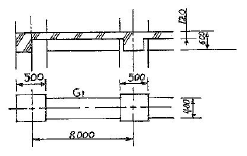
- 11.52m3
- 12.23m3
- 13.44m3
- 15.36m3
(정답률: 61%)
22. 거푸집에 관한 설명으로 틀린 것은?
- 터널거푸집(Tunnel form)은 구획 전체의 벽판과 바닥면을 ㄱ자형, ㄷ자형으로 견고하게 짠 것으로 이동설치가 용이하다.
- 워플 거푸집(Waffle form)은 옹벽, 피어 등의 특수 거푸집으로 고안된 것이다.
- 메탈 폼(Metal form)은 철판 앵글 등을 써서 제작된 철제 거푸집이다.
- 슬라이딩 폼(Sliding form)은 돌출부가 없는 사일로 (Silo) 등에 사용되며, 공기는 약 1/3 정도 단축 가능하다.
(정답률: 44%)
23. 벽면적 4.8m2 크기에 1.5B 두께로 시멘트 벽돌을 쌓고자 할 때 벽돌소요 매수로 옳은 것은? (단,B형 벽돌(표준형)을 사용하며 할증율은 4%로 한다)
- 374매
- 743매
- 1,118매
- 1,487매
(정답률: 67%)
24. 벽 거푸집 공사에서 멍에 대기 및 철선 조임 간격에 대한 내용으로 옳은 것은?
- 멍에 대기의 간격은 일반적으로 밑에서 85㎝ 정도로 배치한다.
- 멍에 대기의 간격은 일반적으로 위에서 120~140㎝정도로 배치한다.
- 철선조임 간격은 하부에는 95㎝ 정도로 배치한다.
- 철선조임 간격은 상부에는 100~110㎝ 정도로 배치한다.
(정답률: 33%)
25. 거푸집면적의 산출방법에 대한 기술이 잘못된 것은?
- 1m2 이하의 개구부는 주위의 사용재를 고려하여 거푸집면적에서 공제하지 않는다.
- 기둥 거푸집 면적 산정시 기둥 높이는 상하층 바닥 안목간의 높이를 적용한다.
- 기초 경사부의 경우 경사도 30° 미만의 경우 거푸집면적을 계상한다.
- 기초와 지중보, 기둥과 벽체의 접합부 면적은 거푸집면적에서 공제하지 않는다.
(정답률: 46%)
26. 각종 도급방식의 설명 중 옳지 않은 것은?
- 정액도급제도는 총공사비만 결정한 후 경쟁 입찰 후 최저입찰자와 계약을 체결하는 제도 이다.
- 실비정산식 시공계약제도는 건축주, 감독자, 시공자 3자가 입회하여 공사에 필요한 실비와 보수를 협의하여 정하고 시공자에게 지급하는 방법이다.
- 턴키도급방식은 건설업자가 금융, 시공, 시운전까지 주문자가 필요로 하는 것을 인도하는 방법이나 건축주의 의도가 반영되지 못하는 단점이 있다.
- 공동도급방식은 기술, 자본 그리고 위험을 분담 시킬 수 있으며, 경비를 절감한다.
(정답률: 30%)
27. 사질토의 경우 표준관입 시험의 타격횟수 N이 50이면 이 지반의 상태(모래의 상대밀도)는?
- 몹시 느슨하다.
- 느슨하다.
- 보통이다.
- 다진 상태이다.
(정답률: 66%)
28. 철골의 구멍뚫기에서 이형철근 D22의 관통구멍의 구멍지름으로 옳은 것은?
- 24㎜
- 28㎜
- 31㎜
- 35㎜
(정답률: 39%)
29. 한중콘크리트를 칠 때 재료가열에 관한 기술 중 옳은 것은?
- 시멘트는 어떠한 방법으로든 가열해서는 안된다.
- 시멘트 페이스트를 가열하는 것은 무방하다.
- 골재는 될 수 있으면 불에 직접 닿게 하여 가열한다.
- 물은 비열이 작아서 덥혀도 별 효과가 없다.
(정답률: 55%)
30. 철골공사에서 크롬산 아연을 안료로 하고, 알키드수지를 전색료로 한 것으로서 알루미늄 녹막이 초벌칠에 적당한 것은?
- 그래파이트 도료
- 징크로메이트 도료
- 광명단
- 알루미늄 도료
(정답률: 57%)
31. 지반의 구성층을 파악하기 위하여 낙하추 또는 화약의 폭발로 지반을 조사하는 방법은?
- 충격식 보링 지하탐사
- 전기 저항식 지하탐사
- 가스관 꽂음에 의한 지하탐사
- 탄성파식 지하탐사
(정답률: 60%)
32. 철근 콘크리트의 골재로서 부득이 해사(海砂)를 사용할 때에 특히 처리할 점은?
- 구조내력상 중요한 부분에 보강근을 넣는다.
- 충분히 물로 씻어낸다.
- 조강 포틀랜드 시멘트를 사용한다.
- 충분히 건조한 후에 사용한다.
(정답률: 62%)
33. 골재로서 염분을 포함한 바다모래는 철근을 부식시킬 위험이 있으므로 규정치를 초과하는 경우 방청 조치를 하는데 그 방법으로 부적절한 것은?
- 물시멘트비의 절감
- 피복두께의 증가
- 아연도금 철근의 사용
- 수밀성이 낮은 표면마감
(정답률: 53%)
34. 네트워크(Network)에 관한 용어로서 관계없는 것은?
- 커넥터(connector)
- 크리티칼 패스(critical path)
- 더미 (dummy)
- 폴로우트(float)
(정답률: 74%)
35. 파이프 회전용의 선단에 커터(cutter)를 장치하여 흙을 뒤섞으며 지중으로 파들어간 다음 선단에서 모르타르를 분출시켜 흙과 모르타르를 혼합하면서 파이프를 빼내는 말뚝의 명칭은?
- 페데스탈 말뚝
- 레이몬드 말뚝
- C.I.P 말뚝(cast in place)
- M.I.P 말뚝(mixed in place)
(정답률: 73%)
36. 프리패브 콘크리트(prefab concrete)에 관한 설명 중 잘못 된 것은?
- 제품의 품질을 균일화 및 고품질화 할 수 있다.
- 작업의 기계화로 노무 절약을 기대할 수 있다.
- 공장생산으로 기계화하여 부재의 규격을 쉽게 변경할 수 있다.
- 자재를 규격화하여 표준화 및 대량생산을 할 수 있다.
(정답률: 72%)
37. CM(Construction Management)에 대한 설명으로 옳은 것은?
- 설계단계에서 시공법까지는 결정하지 않고 요구 성능만을 시공자에게 제시하여 시공자가 자유로이 재료나 시공방법을 선택할 수 있는 방식이다.
- 시공주를 대신하여 전문가가 설계자 및 시공자를 관리하는 독립된 조직으로 시공주, 설계자, 시공자의 조정을 목적으로 한다.
- 설계 및 시공을 동일회사에서 해결하는 방식을 말한다.
- 2개 이상의 건설회사가 공동으로 공사를 도급하는 방식을 말한다.
(정답률: 68%)
38. 다음 방수공사에 대한 설명 중 옳은 것은?
- 보통 수압이 적고 얕은 지하실에는 바깥방수법, 수압이 크고 깊은 지하실에는 안방수법이 유리하다.
- 지하실에 안방수법을 채택하는 경우, 지하실 내부에 설치하는 간막이벽, 창문틀 등은 방수층 시공을 하기 전에 먼저 하는 것이 유리하다.
- 지하실이 바깥방수 아스팔트방수층일 경우, 바닥방수층 치켜올림을 고려하여 밑창콘크리트는 60㎝ 이상 넓게 하고 방수층도 접어 올릴 수 있게한다.
- 바깥방수법은 보호 누름이 필요하지만, 안방수법은 없어도 무방하다.
(정답률: 31%)
39. CIC(Computer Integrated Construction)의 설명으로 옳은 것은?
- 컴퓨터, 정보통신 밒 자동화 생산, 조립기술 등을 토대로 건설행위를 수행하는데 필요한 기능들과 인력들을 유기적으로 연계하여 각 건설업체의 업무를 각사의 특성에 맞게 최적화 하는 것
- 재무, 인사관리 등의 요소들을 대상으로 건설업체의 업무수행을 전산화 처리하여 업무를 신속하게 수행토록 하는 것
- 건축 시공시에 컴퓨터를 활용하여 시공량의 점검, 시공부위 확인 등을 수행토록 하는 것
- 컴퓨터를 활용하여 건설의 입찰 및 계약업무를 전산화하여 업무를 신속하고, 정확하게 처리토록 하는 것
(정답률: 67%)
40. 유성페인트의 정벌칠에서 광택과 내구력을 증가시키는데 좋은 효과를 나타내는 재료는?
- 스티풀
- 건성유(보일드유)
- 드라이어
- 캐슈
(정답률: 68%)
3과목: 건축구조
41. 철근콘크리트 압축 부재에 사용되는 띠철근의 수직간격기준으로 옳지 않은 것은?
- 종방향 철근지름의 16배 이하
- 띠철근 지름의 48배 이하
- 기둥 단면의 최소 치수 이하
- 250㎜ 이하
(정답률: 49%)
42. 탄성계수 E=2100 kgf/cm2, 포아송비 v=0.3 인 강체에 전단응력도 V=100 kgf/cm2가 가해졌을 때 전단변형도는?
- 0.168 radian
- 0.143 radian
- 0.124 radian
- 0.048 radian
(정답률: 27%)
43. 철근의 이음에 관한 설명 중 옳지 않은 것은?
- 휨 부재에서 서로 직접 접촉되지 않게 겹침이음 된 철근은 횡 방향으로 소요 겹칩 이음 길이의 1/5 또는 150㎜ 중 작은 값 이상 떨어지지 않아야 한다.
- 인장력을 받는 이형철근 및 이형 철선의 겹침이 음길이는 최소 400㎜ 이상이어야 한다.
- 일반적으로 D35를 초과하는 철근은 겹침이음을 하지 않아야 한다.
- 압축 이형철근의 겹침 이음 길이는 최소 300㎜ 이상이어야 한다.
(정답률: 42%)
44. 그림과 같은 보에서 점 A의 반력 모멘트는 얼마인가?
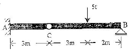
- -6 tfㆍm
- -9 tfㆍm
- -15 tfㆍm
- -30 tfㆍm
(정답률: 20%)
45. 그림과 같은 단순보의 C점에서의 휨모멘트 값은?
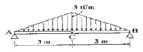
- 3 tfㆍm
- 6 tfㆍm
- 9 tfㆍm
- 12 tfㆍm
(정답률: 48%)
46. 다음의 철골조 주각 부분의 그림에서 A의 명칭은?
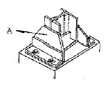
- base plate
- side angle
- anchor plate
- wing plate
(정답률: 56%)
47. 창문 위에 건너질러 상부에서 오는 하중을 좌우벽으로 전달시키기 위하여 대는 보는?
- 기초보
- 인방보
- 토대
- 테두리보
(정답률: 73%)
48. 계수전단력 Vu가 콘크리트가 부담하는 전단강도 의 1/2를 초과하는 철근콘크리트 휨부재의 경우 전단보강근의 최소 단면적은? (단, fy는 전단근의 항복강도, bw는 보의 폭, s는 전단근의 간격이다)
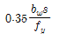
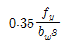
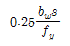
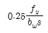
(정답률: 50%)
49. 건축구조설계기준에 의하면 흙에 접하거나 옥외의 공기에 직접 노출되는 현장 치기 콘크리트이 경우 D16 이하의 철근의 최소피복두께는 강도설계법에서 얼마로 하는가?
- 20㎜
- 30㎜
- 40㎜
- 50㎜
(정답률: 53%)
50. 철근콘크리트 단근보에서 fck=27MPa, fy=400MPa, 균형철근비 pb=0.0293 일 때 인장철근의 최대철근비(pmax), 최소철근비(pmin) 값은?
- pmax = 0.0325, pmin = 0.0047
- pmax = 0.0220, pmin = 0.0033
- pmax = 0.0220, pmin = 0.0035
- pmax = 0.0160, pmin = 0.0028
(정답률: 40%)
51. 강도설계법의 단근보에서 fck=24MPa, fy=400MPa 일 때, 균형철근비는?
- 0.023
- 0.026
- 0.039
- 0.⑤3
(정답률: 34%)
52. 창호 철물에 대한 설명 중 틀린 것은?
- 크레센트는 오르내리창을 잠그는데 사용된다.
- 도어 체크는 열려진 여닫이문이 저절로 닫아지게 하는 장치이다.
- 경첩은 문짝을 문틀에 달아 여닫는 축이 되는 것이다.
- 래버터리 한지는 열려진 문을 버티어 고정하는 것으로 자재 여닫이문에 주로 사용된다.
(정답률: 34%)
53. 강도설계법의 강도 관계식이 옳게 표시된 것은? (단, Md는 설계강도, Mn은 공칭강도, Mu는 소요강도, ∅는 강도감소계수이다.)
- Md = ∅ • Mn ≥ Mu
- Md = Mu ≤ ∅ • Mn
- Md ≤ ∅ • Mn = Mu
- Mn = ∅ • Md ≥ Mu
(정답률: 49%)
54. 곡면판이 지니는 역학적 특성을 응용한 구조로서 외력은 주로 판의 면내력으로 전달되기 때문에 경량이고 내력이 큰 구조물을 구성할 수 있는 것은?
- 트러스구조
- 커튼월구조
- 셸구조
- 패널구조
(정답률: 65%)
55. 그림과 같은 트러스에서 압축재의 수는 몇 개인가?
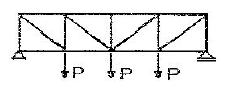
- 8개
- 9개
- 7개
- 10개
(정답률: 18%)
56. 보강콘크리트 블록조에 대한 설명 중 잘못된 것은?
- 내력벽으로 둘러싸인 부분의 바닥면적은 80m2을 넘지 않도록 한다.
- 벽체의 줄눈은 통줄눈이 되지 않도록 한다.
- 철근보강시 철근은 굵은 것을 조금 넣는 것보다 가는 것을 많이 넣는 것이 좋다.
- 벽은 집중적으로 배치하지 말아야 하며 가능한 한 균등히 배치한다.
(정답률: 72%)
57. 강도설계법의 규준에 의한 양단 연속이고 스팬 4.2m인 1방향 슬래브의 최소 두께는 얼마인가? (단, 처짐을 검토하지 않아도 되며, 보통콘크리트 사용, )
- 100 ㎜
- 120 ㎜
- 130 ㎜
- 150 ㎜
(정답률: 49%)
58. 직사각형 철근콘크리트 단면의 보에 발생하는 최대 전단응력은? (단, 보의 단면적은 10cm2 , 전단력은 100kgf 이다.)
- 10 kgf/cm2
- 15 kgf/cm2
- 100 kgf/cm2
- 20 kgf/cm2
(정답률: 32%)
59. 그림과 같은 현관 출입구에서 지붕에 등분포 하중이 작용 할 때, 기둥에 휨모멘트가 생기지 않게 하려면 L은 얼마인가?
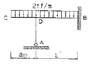
- 2.45m
- 4.90m
- 6.12m
- 7.35m
(정답률: 20%)
60. 다음 중 래티스보의 웨브(web)를 90° 각도로 댄 것으로 경미한 하중을 받는 곳에 주로 사용되는 철골보는?
- 격자보
- H 형강보
- 트러스보
- 플레이트거더
(정답률: 43%)
4과목: 건축설비
61. 다음 중 3상 유도전동기의 속도제어 방법이 아닌 것은?
- 인버터를 사용하여 주파수를 변화시킨다.
- 독립된 2조의 극수가 서로 다른 고정자 권선을 감아 놓고 필요에 따라 극수를 선택하여 극수를 변화시킨다.
- 회전자에 접속되어 있는 저항을 변화시켜 비례추이의 원리로 제어한다.
- 2선의 접속을 바꿔 회전자계의 방향이 반대로 되도록 한다.
(정답률: 58%)
62. 방의 취득 현열량이 32,000 kcal/h로 산출되었다. 실온을 26°C로 유지하기 위해 16°C의 공기를 취출하도록 계획되었다. 실내로의 송풍량은 몇 m3/h가 되는가? (단, 공기의 단위체적당 정압비열은 0.288㎉/m3°C으로 한다.)
- 2,667 m3/h
- 11,111 m3/h
- 13,333 m3/h
- 26,667 m3/h
(정답률: 35%)
63. 급수방식 중 고가수조방식에 대한 설명으로 옳지 않은 것은?
- 저수시간이 길어지면 수질이 나빠지기 쉽다.
- 대규모의 급수 수요에 쉽게 대응할 수 있다.
- 단수시에도 일정량의 급수를 계속할 수 있다.
- 급수공급압력의 변화가 심하고 취급이 까다롭다.
(정답률: 70%)
64. 관균등표에 의해 급수 관경을 결정할 때 환산기준이 되는 관경은?
- 15A
- 20A
- 25A
- 32A
(정답률: 40%)
65. 다음 중 현열부하와 잠열부하 모두를 계산하여야 하는 요소는?
- 틈새바람
- 조명발열
- 유리창 투과열량
- 벽체 관류열량
(정답률: 62%)
66. 다음 중 점검할 수 없는 은폐 장소에 적당치 않은 옥내 배선의 공사방법은?
- 애자 사용 공사
- 목제 몰드 공사
- 합성 수지관 공사
- 케이블 공사
(정답률: 31%)
67. 건축화조명 중 천장 전면에 광원 또는 조명기구를 배치하고, 발광면을 확산투과성 플라스틱판이나 루버 등으로 전면을 가리는 조명 방법은?
- 다운라이트 조명
- 코니스 조명
- 밸런스 조명
- 광천장 조명
(정답률: 61%)
68. 에스컬레이터에 대한 설명으로 옳은 것은?
- 경사도는 30˚ 이하로 한다.
- 정격속도는 하강방향의 안전을 고려하여 45m/min 이하로 한다.
- 수송능력은 엘리베이터와 비슷하다.
- 구동장치, 제어장치 등을 격납 하는 기계실은 되도록 크게 한다.
(정답률: 52%)
69. 엘리베이터 설비에서 카가 최상층이나 최하층에서 정상 운행위치를 벗어나 그 이상으로 운행하는 것을 방지하는 안전 장치는?
- 조속기
- 가이드 레일
- 리미트 스위치
- 완충기
(정답률: 78%)
70. 다음 급수기구 중 최저필요압력이 가장 큰 것은?
- 일반수전
- 샤워기
- 블로우아웃식 대변기
- 가스순간 탕비기
(정답률: 69%)
71. 다음 중 증기난방에 대한 설명으로 옳지 않은 것은?
- 응축수 환수관 내에 부식이 발생하기 쉽다.
- 온수난방에 비해 방열기 크기나 배관의 크기가 작아도 된다.
- 방열기를 바닥에 설치하므로 복사난방에 비해 실내바닥의 유효면적이 줄어든다.
- 온수난방에 비해 예열시간이 길어서 충분한 난방감을 느끼는데 시간이 걸린다.
(정답률: 60%)
72. 그림과 같은 습공기선도 상에서 공기가 1의 상태에서 2의 상태로 변화하는 과정을 설명한 것은?
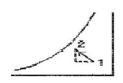
- 가열가습
- 냉각감습
- 가열감습
- 냉각가습
(정답률: 40%)
73. 양수량이 1m3/min, 전 양정이 50m 되는 펌프에서 회전수를 1.2배 증가 시켰을 때 양수량은?
- 1.2배 증가
- 1.7배 증가
- 2.2배 증가
- 2.4배 증가
(정답률: 63%)
74. 광원에서의 발산 광속 중 60~90[%]는 윗 방향으로 향하여 천장이나 윗벽 부분에서 반사되고, 나머지 빛이 아래 방향으로 향하는 방식의 조명기구는?
- 직접조명기구
- 반직접조명기구
- 적반확산조명기구
- 반간접조명기구
(정답률: 58%)
75. 다음 중 배수관에 트랩을 설치하는 가장 주된 이유는?
- 하수가스, 악취 등이 실내로 침입하는 것을 막기 위하여
- 배수관의 신축을 조절하기 위하여
- 배수의 소음을 감소하기 위하여
- 배수의 동결을 막기 위하여
(정답률: 66%)
76. 다음 중 냉각탑을 설치하는 장소로 가장 적당한 곳은?
- 지하실
- 보일러실
- 바람이 안 통하는 곳
- 바람이 잘 통하는 옥상
(정답률: 58%)
77. 다음 중 급탕설비에 관한 설명으로 맞는 것은?
- 팽창탱크는 반드시 개방식으로 해야 한다.
- 리버스 리턴(reverse-return) 방식은 전 계통의 탕의 순환을 촉진하는 방식이다.
- 직접가열식 중앙급탕법은 보일러 안에 스케일 부착이 없어 내부에 방식처리가 불필요하다.
- 간접가열식 중앙급탕법은 저탕조와 보일러를 직결하여 순환가열하는 것으로 고압용 보일러가 주로 사용된다.
(정답률: 34%)
78. 고압증기배관에서 환수관이 높은 위치에 있을 때 기기에서 배출된 응축수를 처리하기 위하여 사용하는 트랩은?
- 드럼 트랩
- S 트랩
- 그리스 트랩
- 버킷 트랩
(정답률: 41%)
79. 다음과 같은 벽체의 열관류율은?
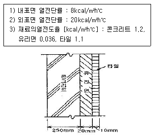
- 약 0.9㎉/m2h°C
- 약 1.⑤㎉/m2h°C
- 약 1.2㎉/m2h°C
- 약 1.35㎉/m2h°C
(정답률: 52%)
80. 면적이 100[m2]인 어느 강당의 야간 소요 평균 조도가 300[lux] 이다. 광속이 2000[lm]인 형광등을 사용할 경우 필요한 개수는? (단, 조명률은 60%이고 감광보상률은 1.5이다.)
- 25개
- 29개
- 34개
- 38개
(정답률: 32%)
5과목: 건축법규
81. 부설주차장의 추가설치시 당해 부지의 경계선으로부터 부설주차장의 경계선까지는 직선거리 기준으로 얼마 이내이어야 하는가?
- 100 m
- 200 m
- 300 m
- 600 m
(정답률: 60%)
82. 주차전용건축물에 관한 설명으로 옳지 않은 것은?
- 기계식주차장의 연면적의 산정은 기계식주차장치에 의하여 자동차가 주차할 수 있는 면적과 기계실ㆍ관리사무소 등의 면적을 합산하여 계산한다.
- 부설주차장의 설치를 제한하는 지역의 주차전용 건축물의 경우에는 당해 지방자치단체의 조례가 정하는 바에 의하여 주차장 외의 용도로 사용되는 부분에 설치할 수 있는 시설의 종류를 당해 지역 안의 구역별로 제한할 수 있다.
- 건축물의 연면적 중 주차장으로 사용되는 부분의 비율이 95 퍼센트 이상인 것을 주차전용건축물이라 한다.
- 판매 및 영업시설인 경우에는 주차장 외의 용도로 사용되는 부분의 비율이 70퍼센트 이상인 것을 주차전용건축물이라 한다.
(정답률: 27%)
83. 건축법상 다중이용건축물에 해당되는 것은?
- 15층이며 바닥면적의 합계가 4,000m2인 판매 및 영업시설
- 바닥면적의 합계가 3,000m2 인 종합병원
- 바닥면적의 합계가 3,000m2 인 문화 및 집회시설 (전시장 및 동ㆍ식물원을 제외한다)
- 16층인 관광숙박시설
(정답률: 66%)
84. 다음 중 바닥면적의 산정방법이 맞지 않는 것은?
- 벽ㆍ기둥이 없는 건축물에 있어서는 그 지붕 끝 부분으로부터 수평거리 1미터를 후퇴한 선으로 둘러싸인 수평투영면적으로 한다.
- 공동주택이 아닌 경우 지상층에 설치한 기계실ㆍ어린이 놀이터ㆍ조경시설의 경우에는 당해 부분의 면적을 바닥면적에 산입하지 아니한다.
- 피로티 기타 이와 유사한 구조(벽면적의 2분의 1이상이 당해 층의 바닥면에서 위층 바닥 아래면까지 공간으로 된 것에 한한다) 부분의 당해 부분이 공중의 통행 또는 차량의 통행ㆍ주차에 전용되는 경우와 공동주택의 경우에는 이를 바닥면적에 산입하지 아니한다.
- 건축물의 지하에 설치하는 물탱크ㆍ기름탱크ㆍ냉각탑 정화조 기타 이와 유사한 것의 설치를 위한 구조물은 바닥면적에 산입하지 아니한다.
(정답률: 36%)
85. 건축물의 출입구에 설치하는 회전문은 기준상 계단이나 에스컬레이터로부터 몇 미터 이상의 거리를 두도록 되어 있는가?
- 1.0m 이상
- 1.5m 이상
- 2.0m 이상
- 2.5m 이상
(정답률: 69%)
86. 거실의 바닥면적의 합계가 5천제곱미터인 아파트에서 내부마감재료로 적합지 않은 것은?
- 거실의 벽 - 난연재료
- 거실에서 지상으로 통하는 주된 복도- 준불연재료
- 거실에서 지상으로 통하는 주된 계단- 준불연재료
- 거실에서 지상으로 통하는 통로의 벽- 난연재료
(정답률: 42%)
87. 건축물에 설치하는 피뢰설비에 관한 기준으로 옳지 않은 것은?
- 측면 낙뢰를 방지하기 위하여 높이가 60미터를 초과하는 건축물 등에는 지면에서 건축물 높이의 5분의 3이 되는 지점부터 상단부분까지의 측면에 수뢰부를 설치할 것
- 피뢰설비의 인하도선을 대신하여 철골조의 철골구조물과 철근콘크리트조의 철근구조체 등을 사용하는 경우에는 전기적 연속성이 보장될 것
- 피뢰설비의 재료는 최소 단면적이 피복이 없는 동선을 기준으로 수뢰부 35제곱밀리미터 이상, 인하도선 16제곱밀리미터 이상, 접지극 50제곱밀리미터 이상이거나 이와 동등 이상의 성늘을 갖출 것
- 돌침은 건축물의 맨 윗부분으로부터 25cm 이상 돌출시켜 설치할 것
(정답률: 29%)
88. 다음 중 특별시장 또는 광역시장의 건축허가 대상의 조건이 되는 건축물은?
- 20층의 호텔
- 25층의 사무소
- 연면적 90,000m2의 공동주택
- 연면적 150,000m2의 공장
(정답률: 51%)
89. 건축법의 일부를 준용하는 공작물의 규모 기준으로 옳지 않은 것은?
- 높이 2미터를 넘는 옹벽
- 높이 4미터를 넘는 광고판
- 높이 8미터를 넘는 고가수조
- 바닥면적 20제곱미터를 넘는 지하대피호
(정답률: 48%)
90. 연면적 200m2를 초과하는 건축물에 설치하는 계단의 설치기준으로 옳지 않은 것은?
- 높이가 3m를 넘는 계단에는 높이 3m 이내마다 너비 1.2m 이상의 계단참을 설치할 것
- 높이가 1.2m를 넘는 계단 및 계단참의 양옆에는 난간을 설치할 것
- 난간ㆍ벽 등의 손잡이는 최대지름이 3.2cm 이상 3.8cm이하인 원형 또는 타원형의 단면으로 할 것
- 계단을 대체하여 설치하는 경사로의 경사도는 1:8 을 넘지 아니할 것
(정답률: 32%)
91. 제1종지구단위계획구역을 지정할 수 있는 지역이 아닌 것은?
- 도시 및 주거환경정비법의 규정에 의하여 지정된 정비구역
- 관광진흥법의 규정에 의하여 지정된 관광특구
- 기반시설부담구역
- 계획관리지역
(정답률: 28%)
92. 도시기본계획의 내용에 포함되지 않는 정책방향 사항은?
- 환경의 보전 및 관리에 관한 사항
- 공원ㆍ녹지에 관한 사항
- 공간구조, 생활권의 설정 및 인구의 배분에 관한 사항
- 주택건설 촉진에 관한 사항
(정답률: 57%)
93. 대지를 분할할 때 최소한의 면적기준으로 부적합한 것은?
- 주거지역 : 60 m2
- 상업지역 : 100 m2
- 공업지역 : 150 m2
- 녹지지역 : 200 m2
(정답률: 34%)
94. 면적이 1㎢ 이상인 토지의 형질변경은 어디서 심의를 거쳐야 하는가?
- 시ㆍ군ㆍ구도시계획위원회
- 시ㆍ도도시계획위원회
- 중앙도시계획위원회
- 건설교통부장관
(정답률: 26%)
95. 공개공지 또는 공개공간의 설치시 건축물에 적용되는 건축법의 완화규정은?
- 건폐율
- 용적률
- 대지면적의 최소한도
- 대지안의 공지
(정답률: 42%)
96. 다음 시설물의 부설주차장 설치기준이 잘못된 것은?
- 관람장 - 정원 100인당 1대
- 골프장 - 1홀당 10대
- 골프연습장 - 1타석당 1대
- 옥외수영장 - 정원 20인당 1대
(정답률: 50%)
97. 건축선에 관한 내용으로 옳은 것은?
- 소요 너비에 미달되는 너비의 도로인 경우에는 그 중심선으로부터 당해 소요 너비에 상당하는 수평거리를 후퇴한 선으로 한다.
- 지상 및 지표하의 건축물은 건축선의 수직면을 넘어서는 아니된다.
- 도로면으로부터 높이 5.0m 이하에 있는 창문은 개폐시 건축선의 수직면을 넘는 구조로 하여서는 아니된다.
- 도로의 교차각이 90° 인 당해 도로의 너비와 교차되는 도로의 너비가 각각 6m 인 도로모퉁이 부분의 건축선은 그 대지에 접한 도로경계선의 교차점으로부터 도로경계선에 따라 각각 3m 씩 후퇴한 2점을 연결한 선으로 한다.
(정답률: 40%)
98. 에너지절약계획서를 제출해야 될 기숙사의 규모 기준은 얼마인가?
- 바닥면적의 합계가 500 제곱미터 이상
- 바닥면적의 합계가 2,000 제곱미터 이상
- 바닥면적의 합계가 3,000 제곱미터 이상
- 바닥면적의 합계가 10,000 제곱미터 이상
(정답률: 38%)
99. 대지면적이 500m2일 때 옥상에 조경을 한 경우 조경면적으로 인정받을 수 있는 최대면적은? (단, 조경설치 기준은 대지면적의 10%로 한다.)
- 15m2
- 20m2
- 25m2
- 30m2
(정답률: 69%)
100. 노외주차장의 설치에 대한 계획기준으로 옳지 않은 것은?
- 토지이용현황을 참작한다.
- 노외주차장 이용자의 보행거리 및 보행자를 위한 도로상황 등을 참작한다.
- 자연녹지지역이 아닌 지역이어야 한다.
- 입구와 출구를 따로 설치해야 하는 경우도 있다.
(정답률: 56%)